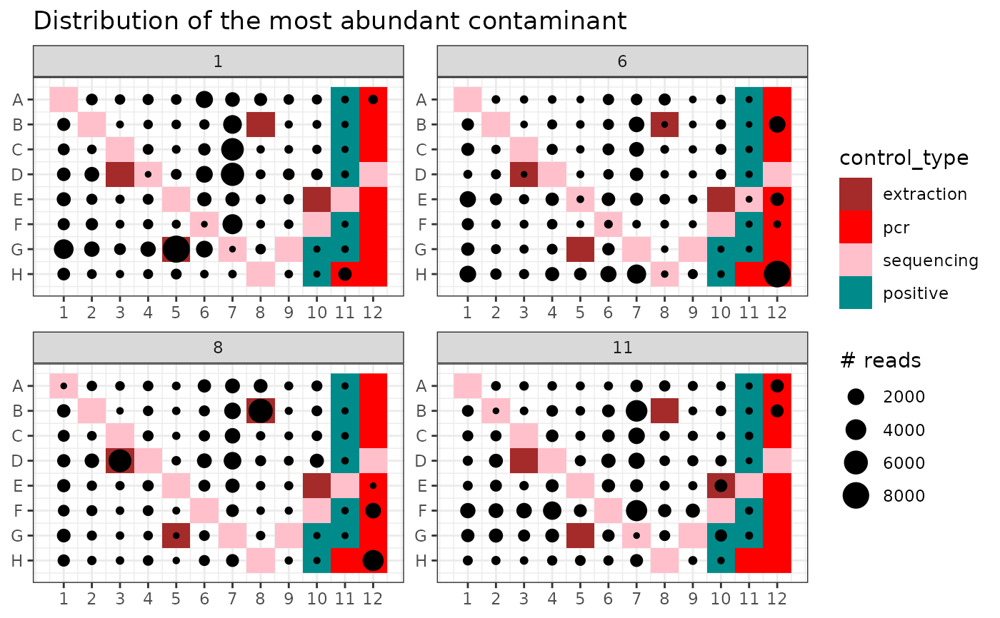

Uses negative controls to determine whether MOTUs in a metabarlist object are more likely to be genuine or contaminants.
contaslayer(
metabarlist,
method = "max",
control_types = c("pcr", "extraction"),
controls = NULL,
output_col = "not_a_contaminant"
)a metabarlist object
a character string specifying the detection method to be used.
Default: "max"
a vector of control types contained in the column control_type
of the `pcrs` table. This parameter is not used when the parameter
controls is specified.
Default is c("pcr", "extraction").
a vector of pcr names corresponding to negative controls.
a character string for the column name in the `motus` table, in which the result will be stored. Default is "not_a_contaminant"
a metabarlist with a new boolean column vector of name `output_col` in
the `motus` table indicating whether MOTUs are genuine (TRUE) or
identified as contaminants (FALSE)
In negative controls, a contaminant should be preferentially amplified since there is no competing DNA. On the other hand, a MOTU detected in negative controls is not necessarily a contaminant, it can be a genuine MOTU detected in negative controls through tag-jump issues.
The function contaslayer relies on these assumptions and detects MOTUs whose relative abundance across the whole dataset is highest in negative controls. Two methods are currently available:
method = "max" considers a MOTU as a contaminant if its frequencies across the entire dataset are highest in at least one negative control.
method = "all" considers a MOTU as a contaminant if its frequencies across all negative controls is greater than that across all samples.
tagjumpslayer, pcrslayer
for other data curation procedures.
data(soil_euk)
library(ggplot2)
## Distinguish genuine MOTUs from contaminants using PCR or extraction negative controls
mbl <- contaslayer(soil_euk)
#> Warning: Some PCRs in metabarlist have a number of reads of zero in table `reads`!
tail(colnames(mbl$motus))
#> [1] "species_name" "rank" "scientific_name"
#> [4] "path" "sequence" "not_a_contaminant"
head(mbl$motus[which(mbl$motus$not_a_contaminant == FALSE),])
#> count GC_content
#> HISEQ:204:C8E5RANXX:7:1101:7642:66295_CONS_SUB_SUB_CMP 966 43
#> HISEQ:204:C8E5RANXX:7:1101:2368:21806_CONS_SUB_SUB 14333 60
#> HISEQ:204:C8E5RANXX:7:2212:15254:15304_CONS_SUB_SUB 2 52
#> HISEQ:204:C8E5RANXX:7:1101:6494:11605_CONS_SUB_SUB 7957 49
#> HISEQ:204:C8E5RANXX:7:1101:17453:53953_CONS_SUB_SUB_CMP 5877 47
#> HISEQ:204:C8E5RANXX:7:2101:1359:22811_CONS_SUB_SUB_CMP 2 52
#> seq_length
#> HISEQ:204:C8E5RANXX:7:1101:7642:66295_CONS_SUB_SUB_CMP 103
#> HISEQ:204:C8E5RANXX:7:1101:2368:21806_CONS_SUB_SUB 98
#> HISEQ:204:C8E5RANXX:7:2212:15254:15304_CONS_SUB_SUB 102
#> HISEQ:204:C8E5RANXX:7:1101:6494:11605_CONS_SUB_SUB 99
#> HISEQ:204:C8E5RANXX:7:1101:17453:53953_CONS_SUB_SUB_CMP 104
#> HISEQ:204:C8E5RANXX:7:2101:1359:22811_CONS_SUB_SUB_CMP 102
#> best_identity.order_filtered_embl_r136_noenv_EUK
#> HISEQ:204:C8E5RANXX:7:1101:7642:66295_CONS_SUB_SUB_CMP 1.0000000
#> HISEQ:204:C8E5RANXX:7:1101:2368:21806_CONS_SUB_SUB 1.0000000
#> HISEQ:204:C8E5RANXX:7:2212:15254:15304_CONS_SUB_SUB 0.9803922
#> HISEQ:204:C8E5RANXX:7:1101:6494:11605_CONS_SUB_SUB 0.9494949
#> HISEQ:204:C8E5RANXX:7:1101:17453:53953_CONS_SUB_SUB_CMP 1.0000000
#> HISEQ:204:C8E5RANXX:7:2101:1359:22811_CONS_SUB_SUB_CMP 0.9803922
#> taxid_by_db.order_filtered_embl_r136_noenv_EUK
#> HISEQ:204:C8E5RANXX:7:1101:7642:66295_CONS_SUB_SUB_CMP 98651
#> HISEQ:204:C8E5RANXX:7:1101:2368:21806_CONS_SUB_SUB 2759
#> HISEQ:204:C8E5RANXX:7:2212:15254:15304_CONS_SUB_SUB 2759
#> HISEQ:204:C8E5RANXX:7:1101:6494:11605_CONS_SUB_SUB 2759
#> HISEQ:204:C8E5RANXX:7:1101:17453:53953_CONS_SUB_SUB_CMP 45105
#> HISEQ:204:C8E5RANXX:7:2101:1359:22811_CONS_SUB_SUB_CMP 2759
#> phylum_name
#> HISEQ:204:C8E5RANXX:7:1101:7642:66295_CONS_SUB_SUB_CMP <NA>
#> HISEQ:204:C8E5RANXX:7:1101:2368:21806_CONS_SUB_SUB <NA>
#> HISEQ:204:C8E5RANXX:7:2212:15254:15304_CONS_SUB_SUB <NA>
#> HISEQ:204:C8E5RANXX:7:1101:6494:11605_CONS_SUB_SUB <NA>
#> HISEQ:204:C8E5RANXX:7:1101:17453:53953_CONS_SUB_SUB_CMP <NA>
#> HISEQ:204:C8E5RANXX:7:2101:1359:22811_CONS_SUB_SUB_CMP <NA>
#> class_name
#> HISEQ:204:C8E5RANXX:7:1101:7642:66295_CONS_SUB_SUB_CMP Chrysophyceae
#> HISEQ:204:C8E5RANXX:7:1101:2368:21806_CONS_SUB_SUB <NA>
#> HISEQ:204:C8E5RANXX:7:2212:15254:15304_CONS_SUB_SUB <NA>
#> HISEQ:204:C8E5RANXX:7:1101:6494:11605_CONS_SUB_SUB <NA>
#> HISEQ:204:C8E5RANXX:7:1101:17453:53953_CONS_SUB_SUB_CMP <NA>
#> HISEQ:204:C8E5RANXX:7:2101:1359:22811_CONS_SUB_SUB_CMP <NA>
#> order_name
#> HISEQ:204:C8E5RANXX:7:1101:7642:66295_CONS_SUB_SUB_CMP Chromulinales
#> HISEQ:204:C8E5RANXX:7:1101:2368:21806_CONS_SUB_SUB <NA>
#> HISEQ:204:C8E5RANXX:7:2212:15254:15304_CONS_SUB_SUB <NA>
#> HISEQ:204:C8E5RANXX:7:1101:6494:11605_CONS_SUB_SUB <NA>
#> HISEQ:204:C8E5RANXX:7:1101:17453:53953_CONS_SUB_SUB_CMP Cercomonadida
#> HISEQ:204:C8E5RANXX:7:2101:1359:22811_CONS_SUB_SUB_CMP <NA>
#> family_name
#> HISEQ:204:C8E5RANXX:7:1101:7642:66295_CONS_SUB_SUB_CMP Chromulinaceae
#> HISEQ:204:C8E5RANXX:7:1101:2368:21806_CONS_SUB_SUB <NA>
#> HISEQ:204:C8E5RANXX:7:2212:15254:15304_CONS_SUB_SUB <NA>
#> HISEQ:204:C8E5RANXX:7:1101:6494:11605_CONS_SUB_SUB <NA>
#> HISEQ:204:C8E5RANXX:7:1101:17453:53953_CONS_SUB_SUB_CMP Heteromitidae
#> HISEQ:204:C8E5RANXX:7:2101:1359:22811_CONS_SUB_SUB_CMP <NA>
#> genus_name species_name
#> HISEQ:204:C8E5RANXX:7:1101:7642:66295_CONS_SUB_SUB_CMP <NA> <NA>
#> HISEQ:204:C8E5RANXX:7:1101:2368:21806_CONS_SUB_SUB <NA> <NA>
#> HISEQ:204:C8E5RANXX:7:2212:15254:15304_CONS_SUB_SUB <NA> <NA>
#> HISEQ:204:C8E5RANXX:7:1101:6494:11605_CONS_SUB_SUB <NA> <NA>
#> HISEQ:204:C8E5RANXX:7:1101:17453:53953_CONS_SUB_SUB_CMP <NA> <NA>
#> HISEQ:204:C8E5RANXX:7:2101:1359:22811_CONS_SUB_SUB_CMP <NA> <NA>
#> rank
#> HISEQ:204:C8E5RANXX:7:1101:7642:66295_CONS_SUB_SUB_CMP family
#> HISEQ:204:C8E5RANXX:7:1101:2368:21806_CONS_SUB_SUB superkingdom
#> HISEQ:204:C8E5RANXX:7:2212:15254:15304_CONS_SUB_SUB superkingdom
#> HISEQ:204:C8E5RANXX:7:1101:6494:11605_CONS_SUB_SUB superkingdom
#> HISEQ:204:C8E5RANXX:7:1101:17453:53953_CONS_SUB_SUB_CMP family
#> HISEQ:204:C8E5RANXX:7:2101:1359:22811_CONS_SUB_SUB_CMP superkingdom
#> scientific_name
#> HISEQ:204:C8E5RANXX:7:1101:7642:66295_CONS_SUB_SUB_CMP Chromulinaceae
#> HISEQ:204:C8E5RANXX:7:1101:2368:21806_CONS_SUB_SUB Eukaryota
#> HISEQ:204:C8E5RANXX:7:2212:15254:15304_CONS_SUB_SUB Eukaryota
#> HISEQ:204:C8E5RANXX:7:1101:6494:11605_CONS_SUB_SUB Eukaryota
#> HISEQ:204:C8E5RANXX:7:1101:17453:53953_CONS_SUB_SUB_CMP Heteromitidae
#> HISEQ:204:C8E5RANXX:7:2101:1359:22811_CONS_SUB_SUB_CMP Eukaryota
#> path
#> HISEQ:204:C8E5RANXX:7:1101:7642:66295_CONS_SUB_SUB_CMP root@no rank:Eukaryota@superkingdom:Stramenopiles@no rank:Chrysophyceae@class:Chromulinales@order:Chromulinaceae@family
#> HISEQ:204:C8E5RANXX:7:1101:2368:21806_CONS_SUB_SUB root@no rank:Eukaryota@superkingdom
#> HISEQ:204:C8E5RANXX:7:2212:15254:15304_CONS_SUB_SUB root@no rank:Eukaryota@superkingdom
#> HISEQ:204:C8E5RANXX:7:1101:6494:11605_CONS_SUB_SUB root@no rank:Eukaryota@superkingdom
#> HISEQ:204:C8E5RANXX:7:1101:17453:53953_CONS_SUB_SUB_CMP root@no rank:Eukaryota@superkingdom:Rhizaria@no rank:Cercozoa@no rank:Cercomonadida@order:Heteromitidae@family
#> HISEQ:204:C8E5RANXX:7:2101:1359:22811_CONS_SUB_SUB_CMP root@no rank:Eukaryota@superkingdom
#> sequence
#> HISEQ:204:C8E5RANXX:7:1101:7642:66295_CONS_SUB_SUB_CMP ccccaacttcctttggttagtcaccaaaagtccctctaagaagcttacgtcaatactagtgcattaacaaaactatttagcaggcgggggtctcgttcgttaa
#> HISEQ:204:C8E5RANXX:7:1101:2368:21806_CONS_SUB_SUB cgcgcacttccatcggcttgagccgatagtccccctaagaagccagcggcccgcaaatgcggaccgggctatttaagggccgaggtctcgttcgttat
#> HISEQ:204:C8E5RANXX:7:2212:15254:15304_CONS_SUB_SUB ctcaaacttccgtggcctaaaaggccatagtccctctaagaagctggccgtgcagggatacctccacatagctagttagcaggctgaggtctcgtccgttaa
#> HISEQ:204:C8E5RANXX:7:1101:6494:11605_CONS_SUB_SUB ctcatacttccattggcttgcgccaatagtccctctaagaagccagcgtactgccagagcaatacgggctagttagcaggttaaggtctcgttcgttat
#> HISEQ:204:C8E5RANXX:7:1101:17453:53953_CONS_SUB_SUB_CMP ctcgaacttccgtcggctacacaccgatagtccctctaagaagtcacgtccaaagaaagaatcctttgtcgaactatttagcaggtcgaggtctcgttcgttaa
#> HISEQ:204:C8E5RANXX:7:2101:1359:22811_CONS_SUB_SUB_CMP ctcaaacttccttggcttaagcggccatagtccctctaagaagctggccgcggagggattcctcctcatagctagttagcaggctgaggtctcgttcgttaa
#> not_a_contaminant
#> HISEQ:204:C8E5RANXX:7:1101:7642:66295_CONS_SUB_SUB_CMP FALSE
#> HISEQ:204:C8E5RANXX:7:1101:2368:21806_CONS_SUB_SUB FALSE
#> HISEQ:204:C8E5RANXX:7:2212:15254:15304_CONS_SUB_SUB FALSE
#> HISEQ:204:C8E5RANXX:7:1101:6494:11605_CONS_SUB_SUB FALSE
#> HISEQ:204:C8E5RANXX:7:1101:17453:53953_CONS_SUB_SUB_CMP FALSE
#> HISEQ:204:C8E5RANXX:7:2101:1359:22811_CONS_SUB_SUB_CMP FALSE
length(which(mbl$motus$not_a_contaminant == FALSE))
#> [1] 190
## Distribution of the most abundant contaminant MOTU in the PCR plate design
contaminants <- rownames(mbl$motus)[mbl$motus$not_a_contaminant == FALSE]
max.conta <- contaminants[which.max(mbl$motus[contaminants, "count"])]
p <- ggpcrplate(soil_euk,
legend_title = "# reads",
FUN = function(m) {
m$reads[, max.conta]
}
)
p + scale_size(limits = c(1, max(soil_euk$reads[, max.conta]))) +
ggtitle("Distribution of the most abundant contaminant")

## Identify contaminants using extraction negative controls only
mbl <- contaslayer(soil_euk,
control_types="extraction",
output_col= "not_an_ext_contaminant")
#> Warning: Some PCRs in metabarlist have a number of reads of zero in table `reads`!
tail(colnames(mbl$motus))
#> [1] "species_name" "rank" "scientific_name"
#> [4] "path" "sequence" "not_an_ext_contaminant"
length(which(mbl$motus$not_an_ext_contaminant == FALSE))
#> [1] 66